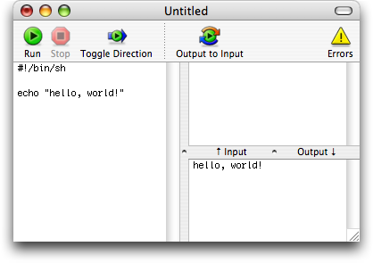

Script EditorScript Editor
Script EditorScript EditorThe script editor allows you to edit and test a single script and change the way it is executed. While you are in the editor, you can see the source code of your script as well as its input and output.
To create a new script:
Instructions for creating and managing templates can be found in Using Templates.
Enter your script code into the large text box at the left, and provide some input for your script in the smaller input box at the upper right. To run your script and see the results of your changes:
Pipe can run your script automatically if Auto-Run is enabled.
Script output will appear in the output box at the lower right. Pipe also supports displaying images or HTML from script output. See Output Types for details.
Any error messages produced by your script are shown in a drawer below the editor window. To toggle the errors drawer:
If your script takes too long to execute, you can abort it:
Pipe does not have advanced text editing features, but it works together with many popular editors on Mac OS X. See External Editors for details.
You can set limits for script execution, as described in Script Limits.
There are several configuration options which change the way your script is executed: You can either let the operating system execute it directly (the normal operation for most scripting languages), or you can let the script be executed by a run command. This is useful if your script isn’t really a script in the strictest sense of the word: C programs, SQL queries and XSLT stylesheets fall into this category, to name just a few examples. If you would like to redistribute your script, you can also include some usage instructions and set a script home page.
You can also pass command line arguments to your script (see Script Arguments).
You can resize or completely hide the text boxes in your editor window by dragging the handles between the boxes. The sizes of these boxes, as well as the editor window size and position, are saved with your script and will be restored whenever you open it.
When you are finished editing a script, add it to the Script Browser for easier access:
You can also enter some information about your scripts, like a home page or usage instructions. Details can be found in: Entering information about scripts.